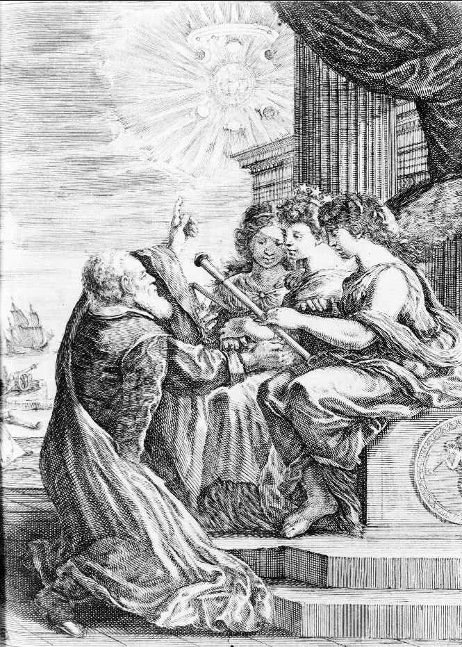
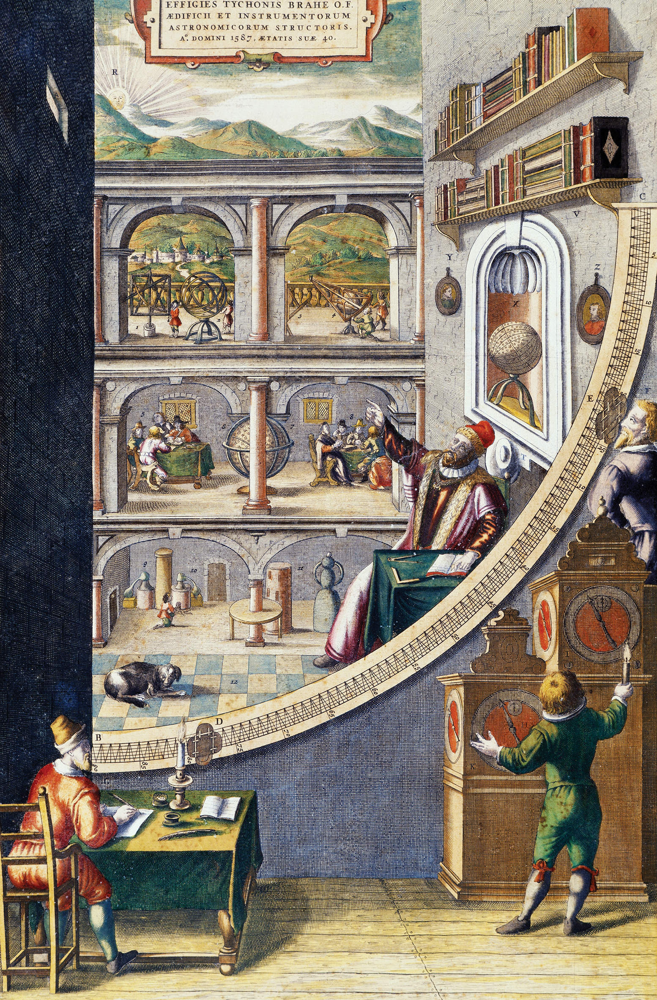
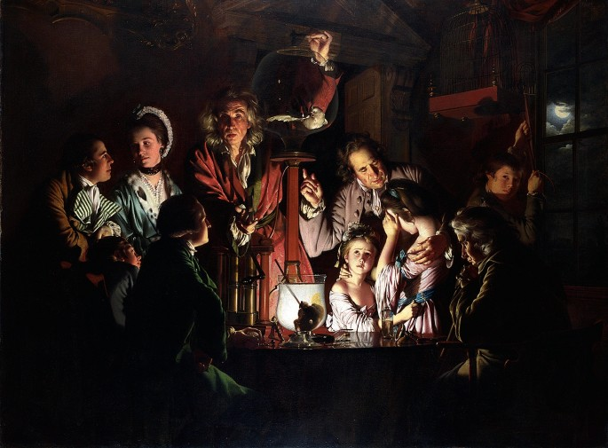

The Scientific Revolution of the 17th century
The 17th century witnessed a profound transformation in human understanding of the natural world, a period historians call the Scientific Revolution. This intellectual movement marked the emergence of modern science, grounded in observation, experimentation, and the use of reason. It challenged traditional authorities and laid the foundation for the Enlightenment and technological progress in later centuries.
At the heart of the revolution was a shift from reliance on ancient texts and philosophical speculation to empirical methods and mathematical reasoning. Figures like Galileo Galilei, Johannes Kepler, and Isaac Newton played central roles. Galileo championed the use of the telescope, providing evidence that contradicted the geocentric model of the universe. Kepler formulated laws of planetary motion, demonstrating that planets orbit the sun in ellipses. Newton unified celestial and terrestrial mechanics through his laws of motion and universal gravitation, published in his Principia Mathematica (1687).
This era also saw advancements in scientific instruments, such as microscopes and barometers, which expanded human perception and experimentation. The work of Francis Bacon emphasized inductive reasoning, advocating for systematic observation and the collection of data. René Descartes, on the other hand, promoted deductive reasoning and analytical thinking, famously stating, “Cogito, ergo sum” (“I think, therefore I am”).
The Scientific Revolution was not a single event but a complex process involving debates, discoveries, and new institutions, such as scientific academies. It profoundly altered humanity’s view of nature and our place within it, paving the way for modern science and its applications in industry, medicine, and daily life.



